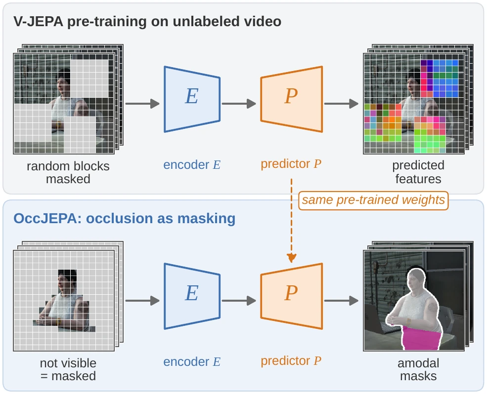
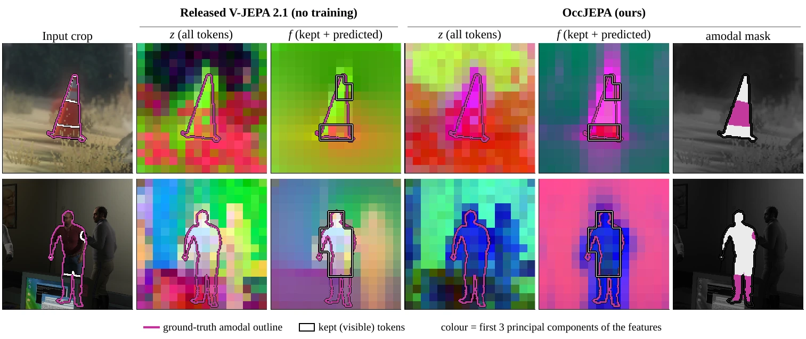
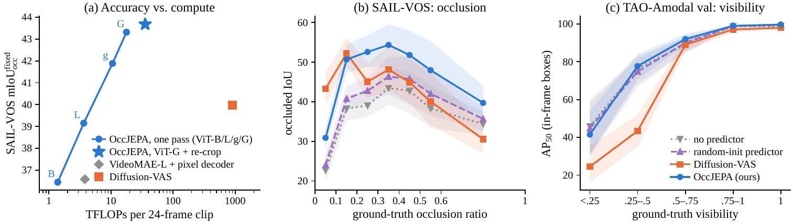

Occlusion as masking
Each tubelet token gets its visible-mask coverage \(\rho_i\). Tokens with \(\rho_i \ge \tau\) are kept as context, all others are dropped, whether they show the occluder or the background. No occluder mask, no depth.
OccJEPA
A video world model is pre-trained to predict what lies in masked regions of a clip. OccJEPA treats the hidden part of an object as exactly such a region and lets the pre-trained V-JEPA 2.1 predictor fill it in: one deterministic model, 33.5× faster than diffusion, and more accurate.
CVPR 2027 submission
Abstract
The hidden part of an object is a masked region of the video.
Amodal video segmentation asks for the complete mask of an object in every frame, including the parts hidden behind other objects. The best current methods generate these masks with fine-tuned video diffusion models, which need many denoising steps and an extra depth network, and give a different answer for every sample.
Self-supervised video world models of the JEPA family are trained on a closely related task: predicting the representation of masked space-time regions from the visible ones. We therefore treat occlusion as masking. The tokens that the object's visible mask does not cover are dropped, the pre-trained V-JEPA 2.1 predictor fills them in, and a light head decodes the observed and predicted features into amodal masks.
The resulting model, OccJEPA, is deterministic and 33.5× faster than the diffusion-based state of the art, and more accurate on SAIL-VOS, on TAO-Amodal, including a held-out test split (+4.00 AP50), and on Kubric. Controlled experiments trace the gain to the predictor's pre-trained weights rather than to its capacity, for world models from 87M to 1.85B parameters.
Highlights
Idea
In pre-training, V-JEPA hides random space-time blocks of a clip and trains a predictor to infer their features from the visible rest. Amodal completion asks the same question for one object: given its visible part, what occupies the region we cannot see? OccJEPA masks exactly the tokens that the object's visible mask does not cover and reuses the predictor with its pre-trained weights.

Method
Each tubelet token gets its visible-mask coverage \(\rho_i\). Tokens with \(\rho_i \ge \tau\) are kept as context, all others are dropped, whether they show the occluder or the background. No occluder mask, no depth.
The encoder reads the kept tokens and the pre-trained predictor fills the dropped positions; the same encoder also reads the full clip. Each token carries what the clip shows there and what the predictor infers.
A light head with a high-resolution refiner decodes \([z;f]\), the RGB crop and the visible mask into amodal masks. At test time, a parameter-free second pass re-crops objects whose extent leaves the first crop.
Masking by visibility and latent completion
This is the pre-training computation of V-JEPA with one change: the masked set is defined by the object's visibility instead of a random block mask.
Video results
Every example comes from a selection rule written before rendering: random draws, the people examples of the paper, our largest gain and our two largest losses. White: visible part of the predicted mask; magenta: the completed hidden part; outline: the given visible mask.
Real videos annotated with amodal boxes; the 25 annotated frames are 1 s apart. Black box: ground truth; dashed: the method's box; values: box IoU.
Synthetic videos with amodal masks; values: per-frame occluded IoU. Includes our largest gain and our two largest losses against Diffusion-VAS.
Random draws from Kubric-Static and Kubric-Dynamic; Diffusion-VAS is run by us with the same inputs; values: per-frame occluded IoU.
Results
All methods take the ground-truth visible masks (Diffusion-VAS protocols); all are zero-shot on the real videos of TAO-Amodal.
Comparison with the state of the art
| SAIL-VOS val | TAO-Amodal val | |||||
|---|---|---|---|---|---|---|
| Method | Type | mIoU | mIoUocc | AP25 | AP50 | AP75 |
| Visible mask | – | 67.89 | n/a | 93.73 | 82.22 | 63.12 |
| Convex hull | – | 63.18 | 27.54 | 93.73 | 82.22 | 63.12 |
| Convex hull (refined) | – | 71.21 | 34.27 | 93.73 | 82.22 | 63.12 |
| PCNet-M | image | 74.20 | 42.52 | 94.89 | 85.11 | 65.97 |
| AISFormer | image | 73.51 | 39.16 | 95.45 | 81.93 | 59.84 |
| SDAmodal | image | 72.73 | 41.26 | 94.43 | 83.60 | 63.06 |
| pix2gestalt | image | 54.83 | 26.59 | 80.73 | 57.50 | 28.95 |
| VideoMAE | video | 69.67 | 29.39 | 69.14 | 56.71 | 41.19 |
| 3D-UNet | video | 72.79 | 39.54 | 94.59 | 83.83 | 64.33 |
| Diffusion-VAS | video | 77.07 | 55.12 | 97.28 | 89.25 | 71.99 |
| best of three samples, selected with the ground truth | ||||||
| pix2gestalt, best of 3 † | image | 60.79 | 33.76 | 91.80 | 71.19 | 38.80 |
| Diffusion-VAS, best of 3 † | video | 79.23 | 59.69 | 98.31 | 92.46 | 77.48 |
| OccJEPA (ours) | video | 78.60 | 52.09 | 98.68 | 93.36 | 76.84 |
Rows other than ours are reported by Diffusion-VAS (CVPR 2025); ours is scored with the official metric. Bold: best, underline: second best, excluding the rows selected with the ground truth (†).
Controlled comparison: same frames, same scorer, held-out test split
| SAIL-VOS | TAO val | TAO test (held out) | |||
|---|---|---|---|---|---|
| Method | mIoUoccfixed | AP50 | AP75 | AP50 | AP75 |
| Visible mask | 0.00 | 82.22 | 63.12 | 83.08 | 62.42 |
| Diffusion-VAS | 39.98 | 89.25 | 71.99 | 88.99 | 71.05 |
| OccJEPA (ours) | 43.68 | 93.36 | 76.84 | 92.99 | 76.40 |
| Δ vs. Diffusion-VAS (95% CI) | +3.70 [+1.38, +5.40] | +4.11 [+3.02, +5.21] | +4.85 [+3.39, +6.34] | +4.00 [+2.99, +5.03] | +5.35 [+4.15, +6.56] |
mIoUoccfixed: occluded IoU on the fixed set of SAIL-VOS frames with an occluded region, a miss counting as zero. The TAO-Amodal test split (48,675 frames, 772 videos) was never used for any choice; Diffusion-VAS on test is its released checkpoint run by us. CIs: bootstrap over videos.
Analysis
Re-initialising the predictor costs most of the gain: with the pre-trained weights the completion module adds +8.53 occluded IoU on SAIL-VOS and +3.93 AP50 on TAO-Amodal, and 75% / 81% of that comes from the weights. The gain holds for every world-model size, from ViT-B to ViT-G (+8.19 to +8.67 occluded IoU).


Code
The repository contains the model, training on SAIL-VOS and MOVi-D, inference with re-crop, the evaluation protocols of SAIL-VOS, TAO-Amodal (including the held-out test split), MOVi and Kubric, and the data preparation. With the released weights it reproduces the paper's predictions frame by frame. Repository.
Quick start
# environment (Python 3.12, PyTorch 2.x with CUDA) and the official V-JEPA 2 code
git clone https://github.com/facebookresearch/vjepa2 third_party/vjepa2
pip install -r requirements.txt && pip install -e .
# V-JEPA 2.1 ViT-G (Meta) and the OccJEPA weights
python scripts/download_weights.py
# amodal masks for one object: its frames and its visible mask in every frame
python -m occjepa.demo --frames video/frames --visible video/visible_masks \
--ckpt weights/occjepa_vitG.pt --out out/ --video
# evaluation (Diffusion-VAS protocols) and training
python -m occjepa.eval_tao --annot data/tao_amodal/test_seqs.json --track_ids data/tao_amodal/test_abs2rel.json \
--frames data/tao_amodal/frames --ckpt weights/occjepa_vitG.pt --out results/tao_test
python -m occjepa.eval_sailvos --ckpt weights/occjepa_vitG.pt --out results/sailvos
python -m occjepa.train --tag occjepa_vitG